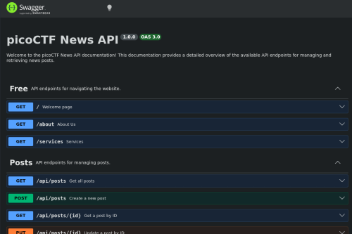
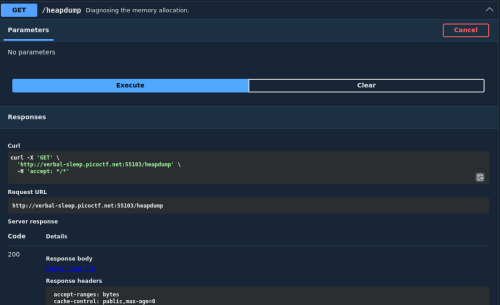

head-dump
- Provided with web application and information that it contains an endpoint leaking information:
- One of the post titles contains a API Documentation hashtag that points to a directory
- Clicking said hashtag navigates to page containing all endpoints for api implementation:

- One of the endpoints was /heapdump. Since the name of the ctf is head-dump this seemed to be a good endpoint to start expirimenting with
- Clicked try it out and execute to try endpoint:

- Resulted in download file option
- Downloaded file to get heapdump-1779661884673.heapsnapshot file
- file heapdump-1779661884673.heapsnapshot -> Ascii with long lines
- less heapdump-1779661884673.heapsnapshot -> A lot of miscellaneous text
- / -> pico -> picoCTF{Pat!3nt_15_Th3_K3y_a485f162}